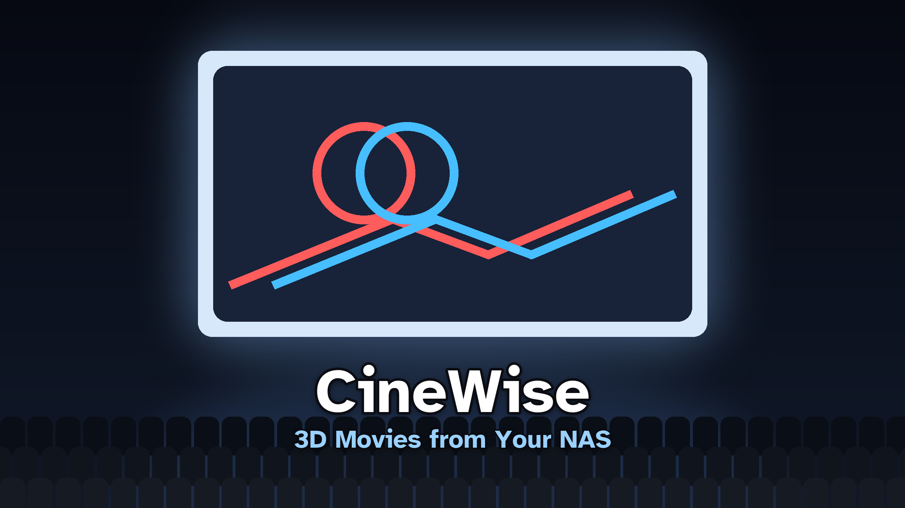
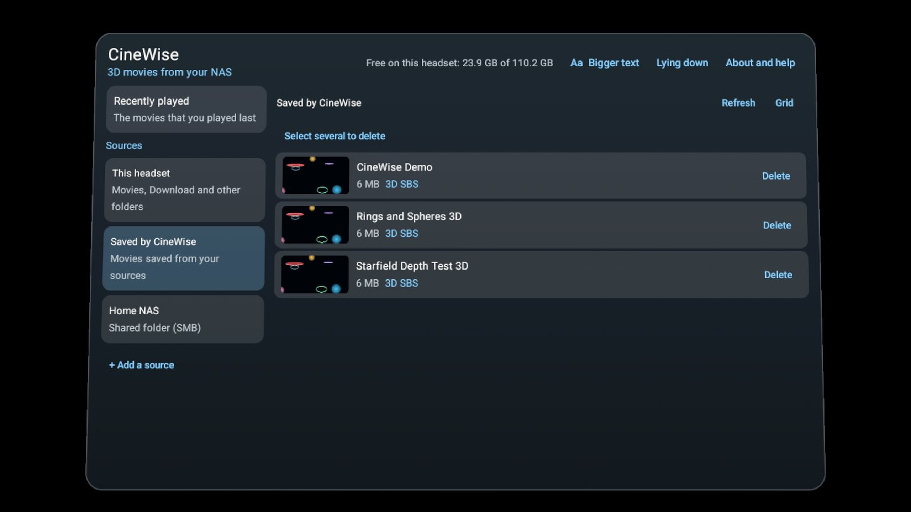
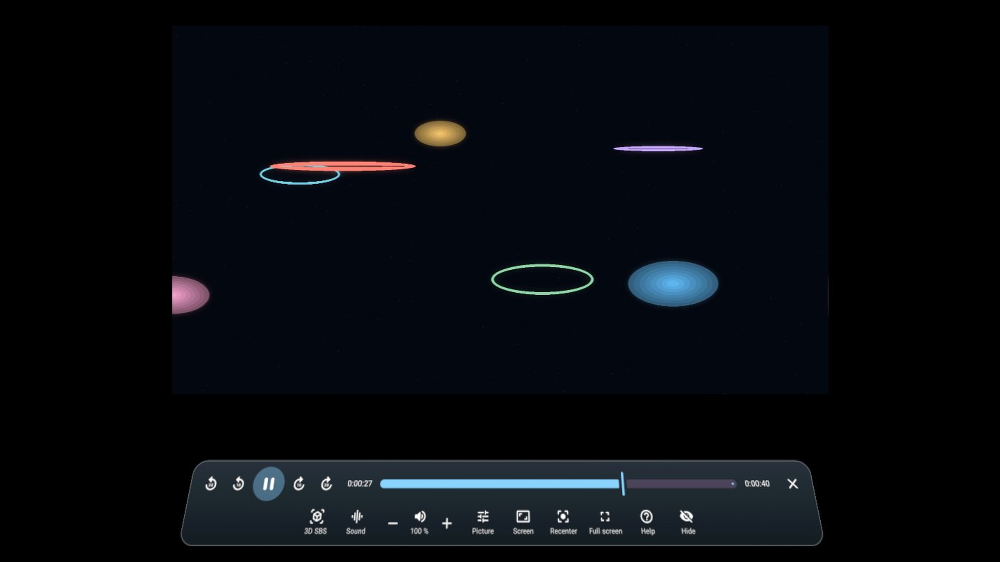

CineWise: 3D Movies from Your NAS

Watch your own 3D movie files on a giant screen, with real depth for each eye. CineWise plays side-by-side and top-bottom 3D files from the shared folder on your NAS or computer, over your home network. It finds the 3D layout of each file for you. Save a movie to the headset and watch it with no network at all. No ads, no account to create and no in-app purchases.
Get CineWise on the Meta Horizon Store
At a glance
| Fact | Detail |
|---|---|
| Price | Free |
| Headset | Meta Quest 3 only, until the Quest 3S check of docs/HEADSET_TEST.md passes. Then also Meta Quest 3S. |
| Ages | For ages 13 and up. |
| Where it is sold | The Meta Horizon Store |
| Internet | Not required. The app needs a local network to reach the NAS, and no network for saved movies. to use the app |
| Mixed reality | No. A fully virtual cinema. |
| Controls | Meta Quest Touch controllers |
| Players | Single user |
| Comfort | Comfortable |
| Language | English (United Kingdom) |
| Ads, chat and in-app purchases | None |
| Data | Your sign-in details, your movie list and your settings stay on the headset. The privacy policy lists the data that the app collects. |
| Developer | dav3studios |
Your 3d movies, in real 3d
CineWise sends each half of the picture to a different eye, so a 3D movie file has the depth that it was made with. Pick the screen size, from a 40 degree screen to one that fills your view, in the dark.
From your own nas
Find your NAS on the home network, or type the address of its shared folder (SMB) once. CineWise lists the MKV, MK3D, MP4 and M4V files in it and plays them straight from the network. You can jump to any point, even in a very large file.
The right 3d layout
CineWise reads the 3D layout from the file and its name: half or full side-by-side, and half or full top-bottom. If a file is labelled wrongly, pick the layout yourself. A 3D check shows a different colour to each eye, so you can see that the 3D works.
Save for later
Save a movie to the headset storage with one button and watch it on a journey with no network. Delete it with one button when you are done.
Sound
Plays the common surround sound formats of movie files and mixes them for the headset speakers or headphones. Pick another sound track, for example another language, from the controls.
Private
Your NAS sign-in details stay on the headset in encrypted storage, and the app does not send them to us. No ads, no account to create and no in-app purchases.
What you need
A NAS or computer with a shared folder on the same network as the headset, and 3D movie files that you have the right to play. CineWise comes with no movies.
Features
- Real 3D: each eye sees its own half of the picture
- Five screen sizes, up to a screen that fills your view
- Plays MKV, MK3D, MP4 and M4V files from your own NAS or computer (SMB)
- Finds the 3D layout of each file: half or full side-by-side, half or full top-bottom
- Pick the layout yourself, and a 3D check for each eye
- Save movies to the headset and watch with no network
- Common surround sound formats, mixed for the headset
- Choose the sound track
- No ads, no account to create and no in-app purchases
Pictures


More from dav3studios
- SpaceWise: The real solar system at its true size and in true time, with eight narrated journeys.
- BodyWise: A ride through the real human body, with blood cells at their real size.
- BeakerWise: 104 science experiments in biology, chemistry and physics on a virtual lab bench.
- EpochWise: 45 moments of history on the real land, under the sky computed for that date.
- GambitWise: Learn chess and Go one small step at a time, with a spoken coach. Free.
On this site
- Help and support
- Privacy policy
- Terms of use
- Credits: the people and works that the app uses, with their licences
CineWise is made by dav3studios for Meta Quest. Get it on the Meta Horizon Store.